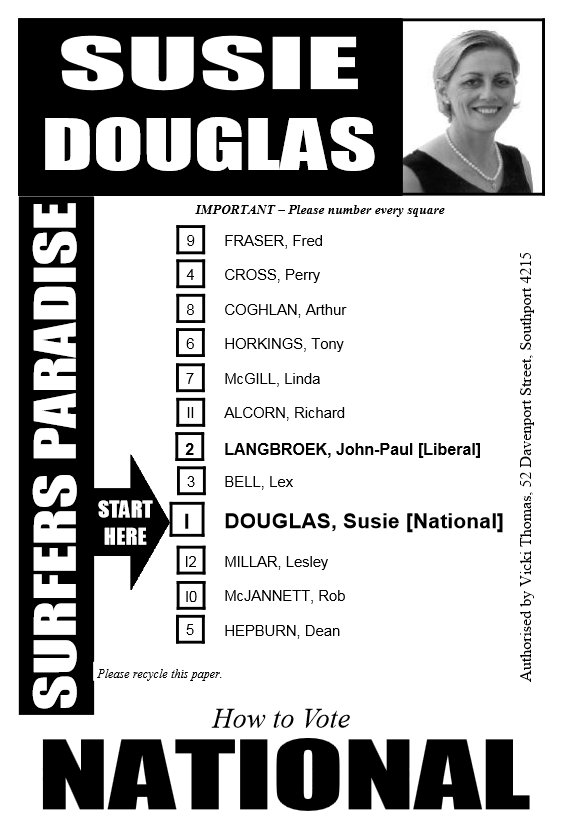

Here are each Australian political party's ranking of the other parties (1=best, 7=worst, they always rate themselves best of course... except in cases where not running a candidate...) in the 2007 election. This table was used for "above the line voting" where a voter just does what her party tells her to – instead of ranking the candidates herself she submits that party's pre-prepared rank-order.
The parties publish "how to vote" cards giving their advice on ranking all other parties,
and it is a crime to publish fraudulent such cards.
Australian voting expert Chris Benham writes (Feb. 2008) to correct possible
mis-impressions by us:
Contrary to [a common misimpression] there is no
"above-the-line" voting in IRV elections in Australia. That
option is only available in multi-winner PR elections for the Senate
and some Upper Houses. Combined with compulsory full ranking
for "below the line" voting, it has the effect of largely corrupting
the STV-PR system into a quasi "closed Party List" system. As far as I
know it is universally regarded by the Australian election reform
advocates (by which Benham means "STV-PR enthusiasts") as an abomination that (along with the
compulsory full ranking) should be got rid of.
To elaborate: Nevertheless, in IRV elections, voters still can vote by following
the recommendations of party "how to vote" cards,
and Benham believes (and a 1992 survey agreed, finding 75% did, a figure
probably substantially lower then than it is now)
that most voters do that.
(And it is a crime to hand out
fraudulent such cards.)
It is just that those recommendations are
not pre-programmed into the voting machines
in IRV races, only in the STV-PR races.
It seems fairly obvious there is considerable "strategy" as opposed to "honesty" in these votes. For example, the LibNats and Labor each rate the other as "worst" (aside from the small extremist "One Nation" party they both agree is absolutely worst). But these are the two most-popular parties in Australia! Is it really their honest opinion that the other is worst, and worse than all the other parties? If so many people agree the Democrats are better than the LibNats, and so many agree the Democrats are better than Labor, isn't it strange the Democrats can't win a single house seat? If these are really honest preferences because, say, of the way all these parties are located along a 1-dimensional "spectrum," then
If these preferences are strategically distorted – and it is obvious that party-recommended votes are strategic essentially by definition – then there is a heck of a lot of strategic exaggeration happening.
Just how many Australians vote strategically versus honestly? Consider these quotes:
Wikipedia (unsourced claim, 11 Dec 2007): Some states may have upwards of 70 candidates on their ballot papers, and the voter must individually number every single candidate for a "below the line" vote to count. As a result the "above the line" system was implemented. Over 95% of electors vote "above the line."
ABC News Guide to Australian Elections (24 Nov 2007): At Federal elections, roughly 95% of voters will vote above the line. For major parties, the rate is 98-99%, and for minor parties, 80-90%. In Tasmania and the Australian Capital Territory, where Hare-Clark voting is used local elections, only 80% of voters use the above the line option.Assuming these claims are correct, it is clear that strategically ranking one of the two major parties top and the other major party bottom (except for One Nation at rock bottom) is extremely common – happens 80-95% of the time – and this amount does not make sense if interpreted as an honest expression of opinion, it only makes sense interpreted as strategic voting.
| Group \ its rank-order | Democrats | Greens | Labor | Family First | Liberal | National | One Nation |
|---|---|---|---|---|---|---|---|
| Democrats | 1 | 2 | 3 | 7 | 4 | 5 | 6 |
| Socialist Alliance | 3 | 1 | 2 | 6 | 4 | 5 | 7 |
| Aust. Labor Party | 3 | 2 | 1 | 4 | 5 | 6 | 7 |
| Pauline | 7 | 6 | 5 | 2 | 3 | 4 | 1 |
| Liberal/Nationals (coalition*) |
4 | 5 | 6 | 3 | 1 | 2 | 7 |
| Citizens Electoral Council | 3 | 7 | 6 | 5 | 1 | 2 | 4 |
| Non-Custodial Parents | 5 | 7 | 6 | 1 | 3 | 4 | 2 |
| Greens | 2 | 1 | 3 | 4 | 6 | 7 | 5 |
| Christian Democrats, Family First |
6 | 7 | 5 | 1 | 3 | 4 | 2 |
| Fishing | 5 | 7 | 6 | 1 | 2 | 3 | 4 |
| Climate Change Coalition | 1 | 2 | 5 | 3 | 6 | 7 | 4 |
| What Women Want | 2 | 1 | 3 | 6 | 4 | 5 | 7 |
| LDP | 2 | 7 | 5 | 1 | 4 | 6 | 3 |
| Hear our voice | 1 | 5 | 4 | 2 | 6 | 7 | 3 |
| Senator Online | 1 | 2 | 3 | 6 | 4 | 5 | 7 |
| Conservatives for Climate and Environment | 6 | 5 | 7 | 1 | 3 | 4 | 2 |
| DLP - Democratic Labor Party | 5 | 7 | 4 | 1 | 2 | 3 | 6 |
| One Nation, Shooters, Fishing and Lifestyle |
6 | 7 | 5 | 2 | 3 | 4 | 1 |
| Socialist Equality | 6/2/5 | 5/1/4 | 1/4/7 | 4/7/3 | 2/5/1 | 3/6/2 | 7/3/6 |
| Carer's Alliance | 1 | 3/4 | 2 | 5 | 3/4 | 7 | 6 |
*Note that the Liberals and Nationals submitted a combined ticket. They are often called the LibNats or NatLibs by, e.g. the Australian press because they effectively are a single party and submit combined tickets. But historically they initially were separate parties and still some argue are technically "two" parties. I, like most Australians today, regard them as one.
"If you disagree with your favourite party's rankings, contact the party and let them know. They most likely obtained significant concessions from higher-ranked parties, or made a preference deal that would increase the likelihood of each getting elected."
| Group \ its rank-order | Democrats | Greens | Labor | Family First | Liberal | National | One Nation |
|---|---|---|---|---|---|---|---|
| Australian Democrats, Australian Progressive Alliance |
1 | 3 | 4/6 | 2 | 4/5 | 5/6 | 7 |
| New Country | 6 | 7 | 3 | 1 | 2 | 4 | 5 |
| The Great Australians | 2 | 3 | 1 | 5 | 6 | 7 | 4 |
| Ex-Service, Service & Veterans Party | 2 | 3 | 1 | 4 | 5 | 6 | 7 |
| Socialist Alliance | 3 | 1 | 2 | 6 | 4 | 5 | 7 |
| Pauline Hanson's One Nation (NSW Division) | 5 | 7 | 6 | 2 | 3 | 4 | 1 |
| Australian Labor Party (N.S.W. Branch anyway) | 3 | 2 | 1 | 4 | 5 | 6 | 7 |
| Liberal/Nationals (coalition, submitted a joint how-to-vote recommendation) |
4 | 5 | 6 | 3 | 1 | 2 | 7 |
| Help End Marijuana Prohibition | 3/3/2 | 2/2/4 | 4/4/3 | 1 | 6 | 7 | 5 |
| liberals for forests | 2 | 7 | 3 | 1 | 4 | 5 | 6 |
| Lower Excise Fuel and Beer Party | 4 | 7 | 2 | 1 | 5 | 6 | 3 |
| Australians Against Further Immigration | 7 | 6 | 5/3 | 1 | 3/4 | 4/5 | 2 |
| Nuclear Disarmament Party of Australia | 2 | 1 | 5 | 3 | 6 | 7 | 4 |
| Citizens Electoral Council of Australia | 1 | 2 | 4 | 5 | 6 | 7 | 3 |
| Progressive Labour Party | 2 | 1 | 3 | 4 | 5 | 6 | 7 |
| Save the ADI Site Party | 2 | 1 | 7 | 5 | 3 | 4 | 6 |
| Non-Custodial Parents Party | 5 | 7 | 6 | 2 | 3 | 4 | 1 |
| Australian Greens | 2 | 1 | 3 | 6 | 4 | 5 | 7 |
| Christian Democratic Party (Fred Nile Group) | 6 | 7 | 4/4/2 | 1 | 2/2/3 | 3/3/4 | 5 |
| Family First Party | 2 | 7 | 6 | 1 | 4 | 5 | 3 |
| Outdoor Recreation Party | 6 | 7 | 2 | 4 | 1 | 3 | 5 |
| The Fishing Party | 4 | 7 | 6 | 1 | 2 | 3 | 5 |
| No Goods and Services Tax Party | 2/3 | 3/2 | 6/4 | 1 | 4/5 | 5/6 | 2 |
of one actual Australian "how to vote" advice card, handed out by supporters of Susie Douglas for a 5 May 2001 Queensland Legislative Assembly by-election (but Lex Bell, Independent, won):
